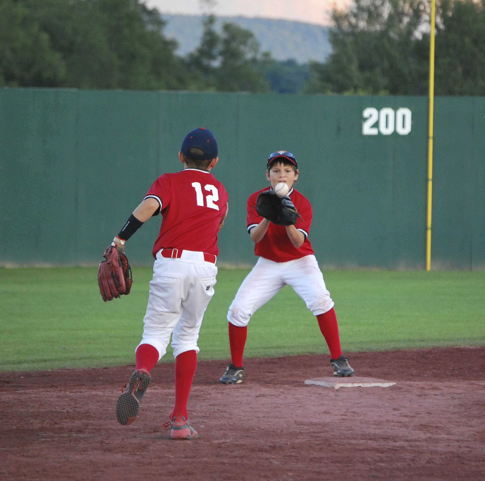

The Decatur Park District offers several programs for sports, whether fall or spring. There are programs for every age group and every skill level! However, finding equipment may be difficult, so Decatur Sports Finder is here to help! There are several stores in our area that can help lower the cost of getting your child into the program they dream of!